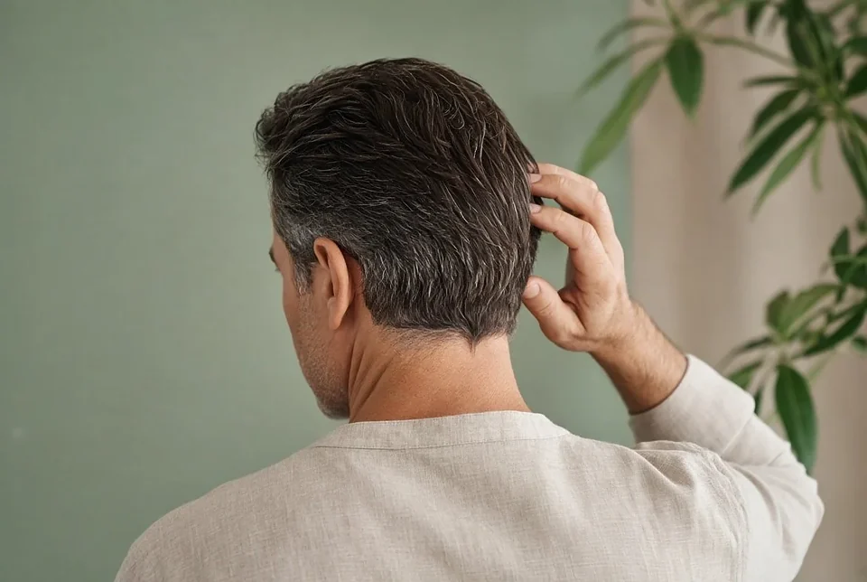

Most of what men hear about non-surgical hair replacement comes from before-and-after photos — dramatic, glossy, and not especially useful when what you actually want to know is: what does this feel like on my head, every day, for the next six weeks? So let's skip the marketing angle and talk through the real, lived experience of wearing a system.
What It Actually Is
A non-surgical hair replacement system for men is a custom-fitted unit made from 100% real human hair, attached to a thin, skin-like base that sits directly over your area of thinning or loss. It's not a wig you take on and off daily — it's semi-permanently bonded to your scalp and styled to blend seamlessly with whatever natural hair you still have.
The First Few Days
Most guys tell us the same thing: the first day or two, you're hyper-aware of it. Not because it looks unnatural — it doesn't — but because you're used to *feeling* your scalp when you run a hand through your hair, and now there's a slightly different sensation. That fades fast. By day three or four, most clients report they genuinely forget it's there, which is really the whole point.
Can You Actually Live Normally In It?
Yes — that's the entire design intent behind non-surgical hair replacement for men. You can shower, swim, work out, and sleep in it exactly as you would with your own hair. It's not fragile. You wash it with regular (though we'll point you toward the right) shampoo, you can style it with product and heat tools, and it moves the way natural hair moves because, structurally, it is natural hair.
What Maintenance Actually Looks Like
Roughly every six to eight weeks, you'll come back in for a retightening appointment. As your natural hair grows underneath the base, the attachment needs to be refreshed — this is a quick, routine visit, not a big production. Outside of that, day-to-day care is close to identical to normal hair care, just with a little more attention paid to how you towel-dry around the base edges.
Will Anyone Be Able to Tell?
This is the question underneath every other question, and the honest answer is: not if it's fitted and colour-matched properly. The base is designed to mimic the appearance of scalp, the hair is real human hair matched to your natural colour and texture, and a good stylist will custom-cut it to your face and existing hairline rather than handing you something generic. Fit and cut are what separate an undetectable system from an obviously-a-unit one — and that's almost entirely dependent on who's doing the work, not the product itself.
No Surgery, No Recovery, No Big Commitment
Unlike a hair transplant, there's no procedure, no recovery period, and no permanence you can't reverse. If your circumstances or preferences change down the line, that's entirely your call.
Ready to See What It Would Actually Look Like on You?
Every consultation is private and comes with zero pressure to book anything afterward. We'll assess your hair loss pattern, talk through realistic expectations, and — if it's a fit — walk you through exactly what the process and timeline would look like for you specifically. Book online or call (212) 221-3881.